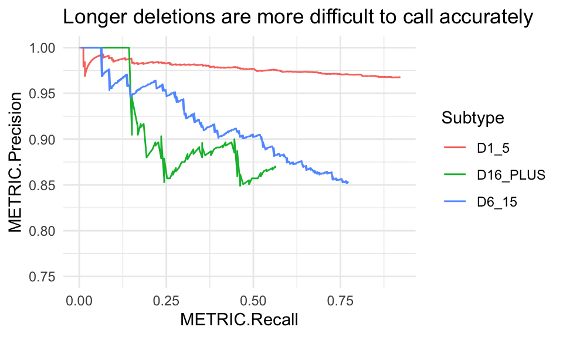

Precision-recall curves
Ben Moore
2017-06-28
One useful set of outputs of that hap.py generates is precision and recall curve data (for information on how to generate this data, see the hap.py docs). Once you’ve run hap.py, happyR contains a few helper functions to load, access and subset this precision-recall data from raw output files.
This vignette contains a few quick examples of loading data, extracting relevant subsets and plotting with ggplot2.
Example data
First load the example data that comes with the package, and load packages / set options for future chunks:
library(happyR)
happy_input <- system.file("extdata", "happy_demo.summary.csv", package = "happyR")
happy_prefix <- sub(".summary.csv", "", happy_input)
hapdata <- read_happy(happy_prefix, quietly = TRUE)
# other packages and options
library(ggplot2)
library(magrittr)
theme_set(theme_minimal())Real data
This vignette uses example data, in real applications you’ll want to load your own results. For example if you’d run hap.py with the output prefix "happy_output/na12878":
/opt/hap.py -r $reference -f $confident_regions -o "happy_output/na12878" $truth $queryLoad this data into R with happyR as follows:
happy_data <- happyR::read_happy("happy_output/na12878")Lazy-loading large files
PR data associated with this hap.py result is lazy-loaded; that is, the data will only be read into R once it is accessed. This saves time that would otherwise be spent reading lots of data that’s never used.
# Large 'ALL' PR data isn't loaded yet and the results object isn't too big
if (require(pryr))
pryr::object_size(hapdata)
#> 21.4 MBAny access, even just a head, evaluates the promise and loads the remaining data:
# view part of all PR data, evaluating the promise
knitr::kable(head(hapdata$pr_curve$all[,1:9]))| Type | Subtype | Subset | Filter | Genotype | QQ.Field | METRIC.Recall | METRIC.Precision | |
|---|---|---|---|---|---|---|---|---|
| INDEL | * | * | ALL | * | QUAL | * | 0.877140 | 0.958635 |
| INDEL | * | * | ALL | * | QUAL | 0.000000 | 0.877140 | 0.958635 |
| INDEL | * | * | ALL | * | QUAL | 10.900000 | 0.877140 | 0.958635 |
| INDEL | * | * | ALL | * | QUAL | 1000.669983 | 0.497818 | 0.961003 |
| INDEL | * | * | ALL | * | QUAL | 1001.200012 | 0.497706 | 0.960987 |
| INDEL | * | * | ALL | * | QUAL | 10015.700195 | 0.000895 | 1.000000 |
# The hapdata object now includes the full PR data so is a bit bigger
if (require(pryr))
pryr::object_size(hapdata)
#> 85 MBIf you don’t find this useful, turn it off by passing lazy = FALSE to read_happy.
Subset PR curves
Subsetting the correct PR curve data can be a bit unwieldy:
# subset for short insertions 1 - 5 bp in length
short_ins1 <- subset(hapdata$pr_curve$all, Filter == "ALL" & Subset == "*" & Subtype == "I1_5")happyR offers pr_data to make this a bit simpler:
short_ins2 <- pr_data(hapdata, var_type = "indel", subtype = "I1_5")
# check they give the same results
all.equal(short_ins1, short_ins2)
#> [1] TRUEDeletions by length
Insertion subtypes are of the form: [IDC]length_range where the first letter indicates the variant classification: I insertion; D deletion; and C complex. Hap.py bins the lengths of these records into ranges by allele length in basepairs: 1_5, 6_15 and 16_PLUS.
# get only deletions for all length ranges
del_pr <- pr_data(hapdata, var_type = "indel",
subtype = c("D1_5", "D6_15", "D16_PLUS"))
ggplot(del_pr, aes(x = METRIC.Recall, y = METRIC.Precision, col = Subtype)) +
geom_line() + coord_cartesian(ylim = c(.75, 1)) +
ggtitle("Longer deletions are more difficult to call accurately")
SNVs at truthset boundaries
Hap.py v0.3.7+ writes subsets TS_contained and TS_boundary by default. These contain truth variants which are either comfortably contained or near the boundary of confident regions, respectively. In some truthsets, those in TS_boundary will show worse performance metrics due to issues with variant representation or a partial haplotype description in the truthset. Alternatively, TS_contained can be an easier-to-call subset of truth variants where the surrounding region was able to be fully-characterised.
snv_pr <- pr_data(hapdata, var_type = "snv",
subset = c("TS_contained", "TS_boundary"))
ggplot(snv_pr, aes(x = METRIC.Recall, y = METRIC.Precision, col = Subset)) +
geom_line() + coord_cartesian(ylim = c(.8, 1)) +
ggtitle("TS_contained performance is higher than TS_boundary")